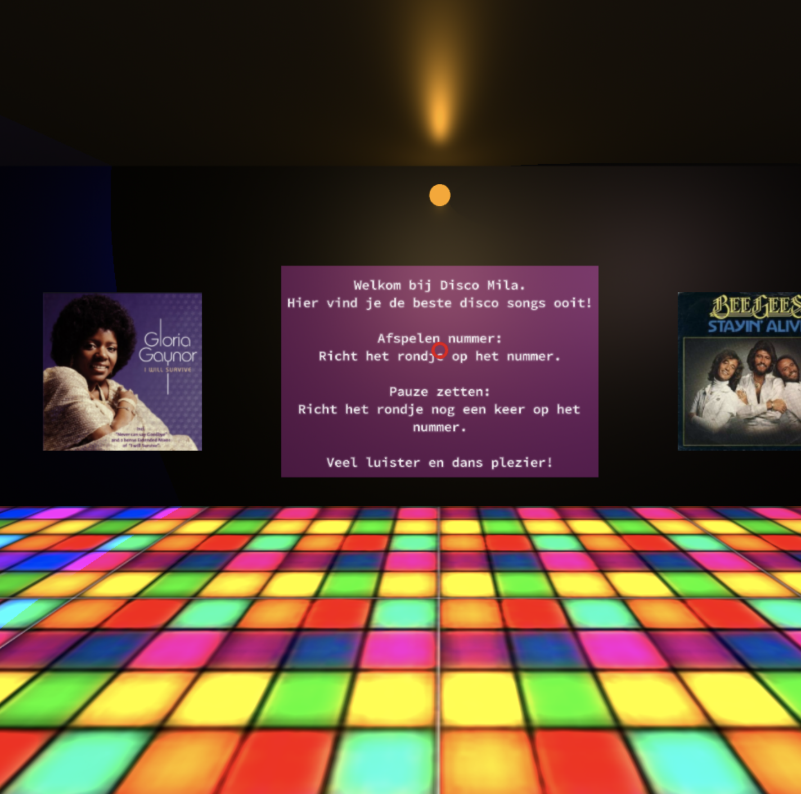

Challenge 1: VR experience
Voor de eerste challenge was het de bedoeling om een interactieve AR of VR ervaring te maken. Ik heb gekozen om een virtuele disco te maken, met de beste disco hits ooit.
Verder lezenChallenge 2: Wearable
Voor de tweede challenge was het de bedoeling om een interactieve wearable te maken. Ik heb gekozen om een richtingaangever te maken voor verkeersregelaars.
Verder lezenChallenge 3
Voor de derde challenge was het de bedoeling om een Artificial Creature te maken. Ik heb gekozen om een balie robot te maken, die zorgt dat klanten afstand houden van de medewerker achter de balie.
Verder lezenChallenge 4
Voor de vierde challenge was het de bedoeling om een playfull interface te maken. Ik heb gekozen om een buzz wire te maken, waarmee je je concentratie kan testen.
Verder lezen